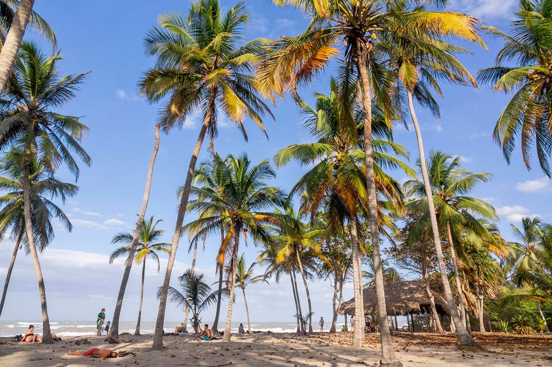

Dag 19–21 · Rustig Caribisch Strandleven · Tubing · Surfen
Een korte en gemakkelijke rit van Tayrona naar het rustige strandleven van Palomino. Vertrekken na ontbijt — geen haast. Check met het Quetzal Dorado Eco-Lodge voor het beste vervoer.
Dé activiteit van Palomino: op een opblaasbare ring de Rio Palomino afdrijven vanuit de jungle naar de zee. Een ontspannend en uniek avontuur. Regelen via het hotel.
Wat is tubing? Je krijgt een grote opblaasbare ring en laat jezelf meegesleurd door de stroom van de Rio Palomino — van een startpunt in de jungle tot aan het punt waar de rivier in zee stroomt. Onderweg: jungleoever, vogels, frisse zoete rivier.
Practisch: Boek via de receptie van Casa del Pavo Real. Ze regelen de gids en vervoer. Neem een waterdichte case mee voor je telefoon.

Wandel langs het ongerepte strand van Palomino naar de Rio San Salvador — een rivier die in zee stroomt. Prachtige combinatie van jungle-achtergrond, golven en stilte. Bijna geen toeristen.
Palomino heeft consistente golven — ideaal voor surfbeginnners en bodyboarden. Surfboards en bodyboards te huur aan het strand. Lessen ook beschikbaar via lokale operators.
Op dag 22 terugreizen naar Cartagena (om later de vlucht naar Bogotá te kunnen halen op dag 23). Ga de vorige dagen al eens kijken bij het station voor een directe verbinding. Vertrekken na ontbijt!